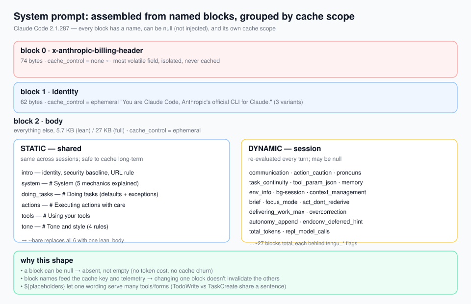
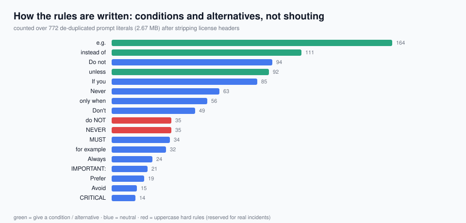
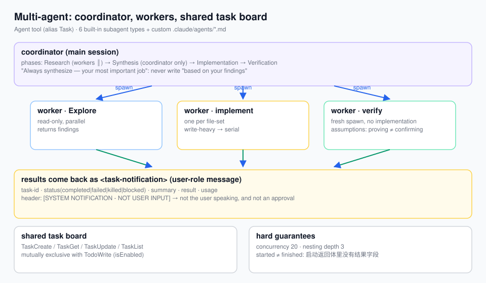
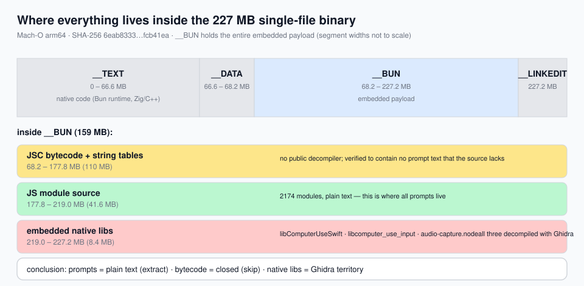
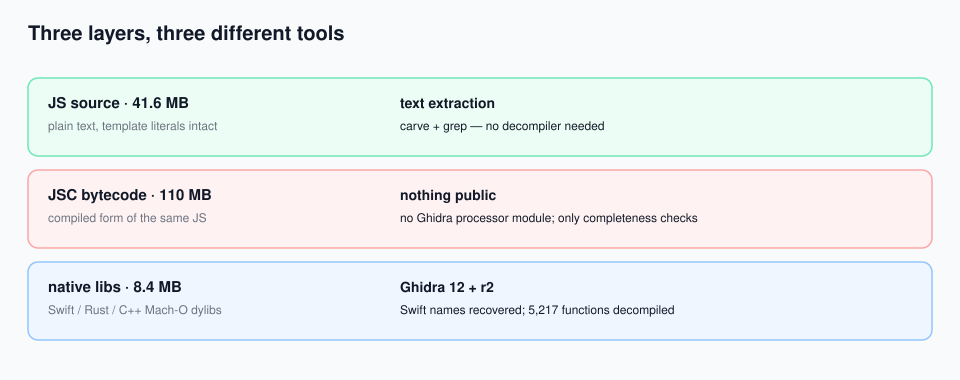
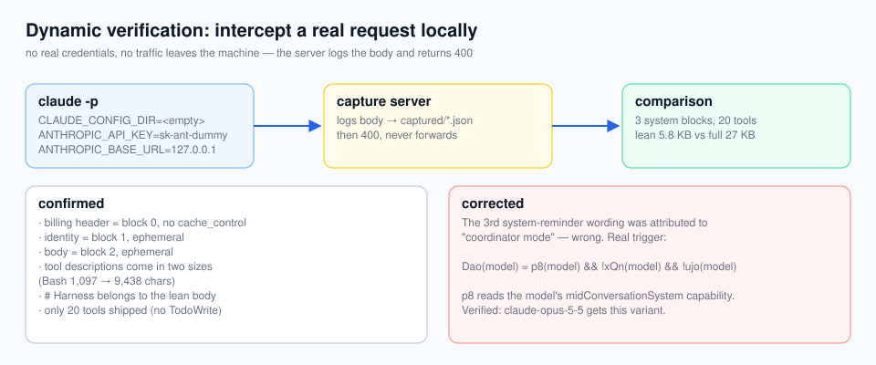
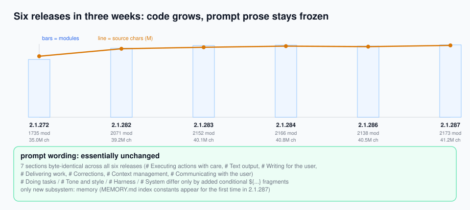

Reverse-engineering Claude Code
Taking apart a locally installed Claude Code v2.1.287: how the system prompt is assembled, how subagents are orchestrated, how context is managed, and what the 226 MB binary actually contains. Fully offline static analysis — the binary was never run or modified.
At a glance
- The system prompt is assembled, not written: 6 static blocks plus ~27 dynamic ones; every block has a name, can be
null(absent, not empty), and can be toggled. - Blocking serves caching: the volatile billing header is its own uncached block, identity is its own block, everything else goes into one body block.
- The expression layer is pluggable: Output Styles package "who I am / how I talk" into an object (prompt + per-turn reminder + waiting reminder + whether coding rules survive).
- One intent, three granularities: identity prose shapes, a one-line reminder sustains, a special-case line corrects.
- Rules give conditions, alternatives and examples rather than shouting:
e.g.(164) >instead of(111) >unless(92) >NEVER(35). - Uppercase NEVER is reserved for real incidents: about 18 occurrences.
- Conflicts are adjudicated explicitly:
Where these rules conflict with … these rules win. - Harness mechanics are documented in the prompt: who injects
<system-reminder>, that tool output can be external, that hook output counts as user feedback. - An async subagent's return value structurally has no result field — fabricating one has no syntactic outlet.
- Approval cannot be relayed: an approved action must be executed by a freshly spawned agent carrying the user's exact words.
- The prompt is a product surface: large parts sit behind
tengu_*feature flags — greyable, revertible, A/B-testable. - Across three weeks the prompt prose froze: +25% modules, +13% flags, seven sections byte-identical.
Method
In a Bun --compile standalone, the JS source ships as plain text — template literals keep their backticks and ${}; only module boundaries carry bytecode markers. No decompiler is needed to recover every prompt:
# 1. carve: module boundaries are \x00 + "// @bun @bytecode"
python3 tools/carve_modules.py # → 2,174 modules + modules.json (real chunk names resolved)
# 2. extract string literals with a state machine ('…' "…" `…`, ${} nesting included)
python3 tools/extract_literals.py # → 28,960 template literals
# 3. locate and quote evidence
python3 tools/ctx.py <absolute offset> 300 300 # print source around an offset
python3 tools/census.py # corpus-wide phrasing statisticsCompleteness: 2,176 boundary markers, 2,175 distinct referenced chunk names, 2,174 carved modules — the three agree, so nothing is missing. 1,266 module names were recovered by matching "export set ⊇ imported names".
How the system prompt is assembled

The assembler returns two groups: shared (stable across sessions) and session (re-evaluated per turn). Six static blocks, roughly 27 dynamic ones — and a dynamic block may return null, meaning "not injected this time".
Three things worth stealing
- Block names feed the cache key and telemetry: editing one block does not invalidate the others.
- Static blocks state principles, dynamic blocks state the situation: "NEVER/always" versus "this session / right now".
- One mechanism, several registers: 2–3 wordings each for the system-reminder note and the communication rules, selected by runtime shape.
The expression layer is pluggable
An Output Style is {name, description, prompt, turnReminder, waitingTurnReminder, keepCodingInstructions}, with default / Proactive / Concise / Explanatory / Learning built in. Coding discipline survives by default — a style must opt out explicitly.
The Concise style carries an adjudication clause: Where these rules conflict with more general communication or formatting guidance elsewhere in your instructions, these rules win. Without it, a style prompt just ties with the system prompt.
How rules are written

| Shape | Example |
|---|---|
| Prohibition + exception | No model turn unless the plugin asks for one. |
| Prohibition + substitute | Prefer the Edit tool for modifying existing files — it only sends the diff. |
| Condition → action | If you did not check, say you did not check. |
| Uppercase red line | NEVER create documentation files (*.md) … |
| Preference order | Prefer denying the enclosing directories. |
| Conflict adjudication | An explicit value always wins. |
| Lead with the outcome | Report what actually happened, not what you intended. |
Multi-agent orchestration

- Started ≠ finished: a successful Agent call returns only
status / agentId / outputFile, plusYou know nothing about its results until that notification arrives. Results arrive as<task-notification>XML, headed[SYSTEM NOTIFICATION - NOT USER INPUT]so it cannot be mistaken for approval. - Subagent types carry output contracts:
Planmust end with### Critical Files for Implementation;workermust reply in two fixed sections with good/bad examples. - Read-only roles are locked down three times: tool denylist +
=== CRITICAL: READ-ONLY MODE ===in the body + seven concrete prohibitions (even/tmpand shell redirection) +omitClaudeMdat assembly time. - "Always synthesize — your most important job": writing "based on your findings" is banned; it outsources understanding to the worker.
- Approval cannot be relayed: after a user approves a gated action, spawn a fresh agent carrying the approval verbatim; this also separates the worker that read untrusted input from the worker performing a privileged action.
- Hard numbers: concurrency 20, nesting depth 3, forks inherit the full conversation without polluting the parent's context.
Context engineering
Four reduction paths
- auto-compact: threshold = effective window − 13,000
/compact: accepts custom instructions- microcompact: clears old tool results on idle
- reactive compact: retries after prompt-too-long
Caching is tied to structure
A sentinel __SYSTEM_PROMPT_DYNAMIC_BOUNDARY__ splits static from dynamic content, and blocks get a cacheScope. The breakpoint moves at runtime when MCP tools are unstable.
File freshness
mtime + content hash + "was it a full view". A partial read does not count as a read; after compaction the file state is invalidated rather than pretended.
Truncation carries a signal
Read defaults to 2,000 lines, Bash to 20,000 chars; Read paginates and sets a truncatedByTokenCap boolean — structured flags survive message rebuilding better than banners.
Inside the binary

__BUN section (159 MB)
The last 8.4 MB are not JS bytecode but embedded native libraries: libComputerUseSwift.dylib (Swift, x86_64 + ARM64), libcomputer_use_input.dylib (Rust — its build path leaks the monorepo layout) and audio-capture.node. In other words, computer use is not implemented in JS.
Dynamic verification: intercepting a real request

Point ANTHROPIC_BASE_URL at a tiny local server, run claude -p with an empty config directory and a dummy key. No traffic leaves the machine, yet we get the real request body.
- Confirmed: three system blocks (uncached billing header / identity / body), tool descriptions genuinely come in two sizes (Bash 1,097 → 9,438 chars),
# Harnessbelongs to the lean body, only 20 tools ship. - Corrected: the third system-reminder wording was attributed to "coordinator mode" — the real trigger is the model's
midConversationSystemcapability bit. - Bonus:
-psends the lean body by default;CLAUDE_CODE_SIMPLE_SYSTEM_PROMPT=0yields the 27 KB full body.
Six releases: code grows, wording does not

Running the same pipeline over 2.1.272 / 282 / 283 / 284 / 286 / 287: seven sections are byte-identical, a few differ only by an added conditional fragment. The one clearly new subsystem is memory — the MEMORY.md index constants appear for the first time in 2.1.287, and the captured request does carry # auto memory.
Native layer: what Ghidra can decompile
Three embedded libraries yield 5,217 functions (Ghidra 12 recovers Swift symbol names):
| Library | Role | Evidence |
|---|---|---|
libComputerUseSwift | Accessibility (AX) layer | AXDispatch.keyCombo/typeText/deleteAtCaret, AXElementAtPoint (ascends to a pressable ancestor), PhantomCursor, CollisionWatch, WindowCover, screenshots with an exclusion list |
libcomputer_use_input | Input injection (Rust) | CGEventCreate/Post/SetFlags, CGEventKeyboardSetUnicodeString, mouse/keyboard/scroll events |
audio-capture.node | CoreAudio capture | AudioUnit / AudioObject — not ScreenCaptureKit |
sandbox-exec, and the seatbelt profile is assembled on the JS side.
What to steal
Cheap and immediate
- Block-name your system prompt; group "stable" vs "per-turn"; allow
null - Give every hard rule a trigger, a counter-example and a substitute action
- Reserve uppercase NEVER for real incidents
- Write the conflict-adjudication sentence
- Document harness mechanics (who injected which tag, where results come from)
- Route injections through a choke point: allowlist, size caps, observable
truncated/dropped - Make reminders self-limiting: two thresholds, an "ignore if not applicable" exit, a repeat cap
Needs architecture work
- Pluggable expression layer (output-style style), three granularities per intent
- Contract the async subagent: structured notifications, prediction banned
- Split concurrency by read/write; serialize writers, isolate with worktrees
- Approval cannot be relayed; separate reading untrusted input from privileged action
- One task system, not two; make "done" executable
- Mark prompt boundaries explicitly so cache breakpoints are computable
- Define verification: proving ≠ confirming
- Turn meta-work into agent workflows (memory consolidation, skill capture, evals, diagnostics)
Limits
- The target is this one local build; prompts may differ by account, region or rollout.
- Final block assembly is only knowable at runtime; this work presents assembly code and block texts, not one specific request body.
- The interactive TUI could not be exercised (the sandbox denies
openpty), so the CLI identity variant is unverified. - JSC bytecode was not decompiled (no public decompiler); only a completeness check was done.
- 231 non-chunk assets (
SKILL-*.mdetc.) were not extracted individually; the sandbox profile's default allow-set is not fully reconstructed. - Decompiled output was surveyed at symbol/API level, not read function by function.
All documents
| Topic | English | 中文 |
|---|---|---|
| Main report | README.en.md | README.md |
| System prompt | 01 (en) | 01 |
| Output styles | 02 (en) | 02 |
| Built-in tools | 03 (en) | 03 |
| Multi-agent | 04 (en) | 04 |
| Context engineering | 05 (en) | 05 |
| Design quirks | 06 (en) | 06 |
| Prompt-writing stats | 07 (en) | 07 |
| Meta features | 08 (en) | 08 |
| Dynamic verification | report (en) | report |
| Version evolution | report (en) | report |
| Native layer | report (en) | report |
| Ghidra decompilation | report (en) | report |